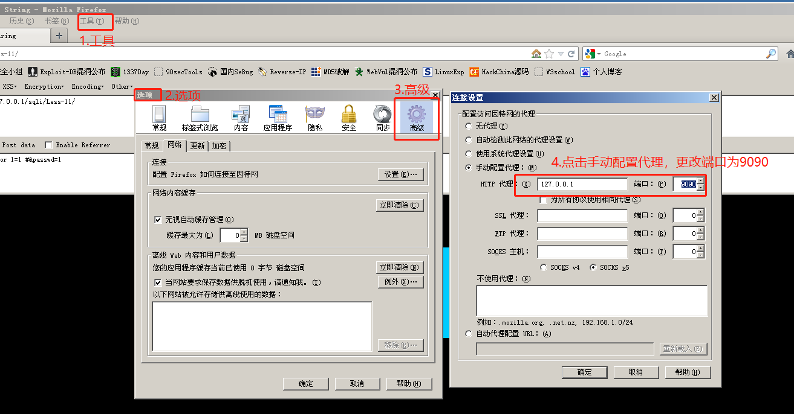

POST注入
# SQL 注入之 POST 注入
本篇使用 POST 注入。
# 注入步骤
# 尝试注入类型
输入 1’ 来看看是否报错

果不其然，此输入框存在 SQL 注入。且报错信息为 use near ''1'' and password='' LIMIT 0,1' at line 1
提取出错点发生在这一句：
'1'' and password='' LIMIT 0,1 |
其中，1’ 是我们输入的，那么其查询语句基本上可以确定为：
select 1 from users where username = 'xxx' and password = 'xxx' LIMIT 0,1 |
接着，查看其 F12 发现，网页发送的是 POST 请求。
然后通过继续深入查询网页源代码的 Elements 可以得到，两个 <input> 标签对应的变量名，Username 对应 uname，Password 对应 passwd
那么就可以构造 POST 请求：
uname=1'&passwd=1 |
那么，基本上可以确定，此题存在 SQL 注入之一 ——POST 注入。
# 确定注入类型
输入 1’ # 查看是否依旧报错
uname=1' #&passwd=1 |
不报错，说明是 POST 单引号注入。
# 是否可以构造非法查询
由于
select 1 from users where username = 'xxx' and password = 'xxx' LIMIT 0,1 |
username 是用单引号括起来的，为了让语法不出错，我们需要保留单引号。即，可以在 uname=1' #&passwd=1 的 ' # 之间插入我们想要的非法查询语句。
因此，我们可以输入 1’ or 1=1 # 万能登录注入就会让查询语句变成：
select 1 from users where username = '1' or 1=1 #' and password = 'xxx' LIMIT 0,1 |
构造 POST 请求：
uname=1' or 1=1 #&passwd=1 |
登录成功:
# 使用 BurpSuit 来做 Post 注入
这里也稍微提及一下 BurpSuit 抓包工具的简单使用：
# FireFox 浏览器配置
FireFox 浏览器中，在” 工具栏 — 选项 — 高级 — 连接设置 “中，配置手动代理和端口号 (127.0.0.1 : 9090)

# BurpSuit 配置
到 BurpSuit 里，”Proxy—Options—Proxy Listeners“中，设置好同样的代理地址和端口号（127.0.0.1 : 9090）
# 令 BurpSuit 拦截到包
点击 FireFox 的任意提交请求的按钮就可以令 BurpSuit 拦截到包。以 FireFox 为例就是，点击了这道题目中的 Submit按钮 或 使用 Hackbar 的 Execute按钮 。
④在内容中鼠标右键点击后选择 Send to Reapeater
⑤在 Reapter 中多次尝试修改注入内容来查看返回的包
第一次注入尝试

第二次注入尝试